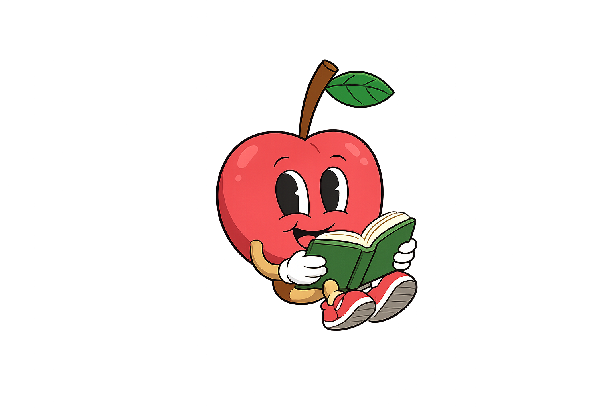

Não guarde tudo para você

Conversar com alguém de confiança pode fazer toda a diferença quando algo está pesando demais.
Quando os sentimentos estiverem atrapalhando sua rotina ou causando sofrimento, procurar um profissional de saúde mental também é uma forma de cuidado!
Saúde mental em números
Falar sobre o assunto ajuda a entender que ansiedade e tristeza fazem parte da experiência de muita gente — e que buscar apoio é um passo válido.
- 1 em cada 7
adolescentes de 10 a 19 anos vive com algum transtorno mental — cerca de 15% de toda a carga de doenças nessa faixa etária.
OMS, agência da ONU - 470 milhões
de pessoas convivem com algum transtorno de ansiedade no mundo, sendo 146 milhões crianças e adolescentes.
OMS, 2023 - 1 em cada 3
é a proporção de pessoas com depressão que recebe tratamento formal no mundo — por isso conversar e pedir ajuda faz diferença.
OMS
Conheça suas emoções
Como está se sentindo hoje?
Práticas para o dia a dia
Pequenos hábitos que ajudam a cuidar da mente na rotina. Toque em um card para entender o porquê.
Respiração
Técnicas de respiração ajudam a acalmar a mente e reduzir a ansiedade.
Desconecte-se
Pausas das telas ajudam a reduzir o estresse, melhorar o foco e trazer equilíbrio para o dia a dia.
Organização mental
Organizar pensamentos, prioridades e tarefas ajuda a tomar decisões mais claras.
Cuide-se
Reconhecer suas qualidades e celebrar pequenas conquistas ajuda a ter mais confiança e segurança no dia a dia.